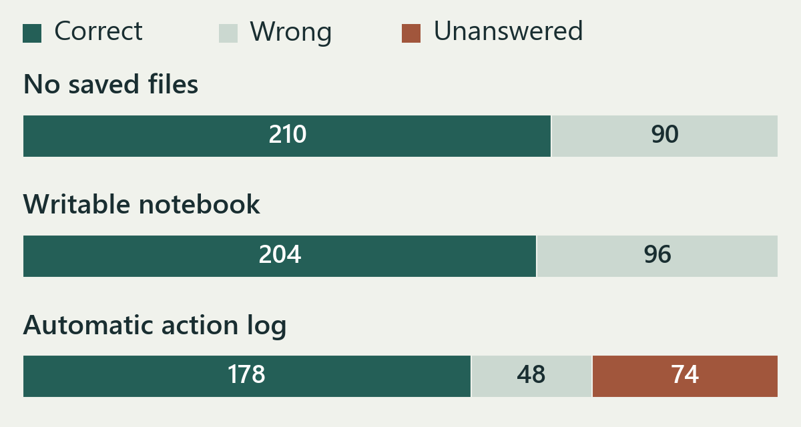

When can we simplify a posterior and keep the same decision?
For each antibody, we had just 3–5 experiments to fit a 20-parameter model and choose among 24 purification settings. We developed a paired Monte Carlo method to certify when a simpler posterior still selects the setting with the lowest expected shortfall in purity and yield.
At the reference fit, each antibody kept its preferred setting under both simplifications. Our method certified all six cases with 95% simultaneous confidence across 138 comparisons.
Zheyu Shi, Dongni Ji, Weijie Xu, Dongmei Han, Simon Hsu, Ran Chen
With three to five runs per antibody product, several parameter settings can explain the same data. We derive conditions under which simplifying a posterior preserves the choice among purification conditions. In one product, the best choice was stable, yet no candidate met the required probability of satisfying both purity and yield specifications.
Journal of the American Statistical Association · Research at Henlius with Ran Chen
We optimize a path between two images using frozen diffusion and vision models to reduce ghosting and abrupt transitions. On MorphBench, FBI achieved the lowest LPIPS (0.0391) and FID (48.02) among the six methods compared.
Group Deliberation Oriented Multi-Agent Conversational Model for Complex Reasoning
Zheyu Shi, Dong Qiu, Shanlong Yu
I implemented a system in which agents propose answers, verify evidence, and arbitrate disagreements. We evaluated its performance on multi-hop questions, including whether answers stayed consistent across rounds of deliberation.
Interpretable deep learning for clinical time series
I connected a prototype network’s predictions to patterns in vital signs and to historical patient cases. Feedback from 40 emergency and intensive care physicians helped me refine the vocabulary and visualizations used to explain the model’s predictions.
Joint research project · Advised by Hailiang Huang
Brown University · CSCI 2951X
Dungeon Gourmet
Would a language agent keep a recipe notebook? Inspired by Delicious in Dungeon, we built a game where cooking rules change from one world to the next. We asked the agent to predict which dishes would cause harm and checked whether the clues it had seen were enough to deduce the answer.
Given a blank notebook, the agent never wrote a note in ten runs. When the game automatically logged every action, the agent spent its entire six-call budget searching the log on 74 of the 300 final questions and left them unanswered.

Final checkpoint. All three conditions used the same 10 worlds and 30 questions per world. Unanswered questions counted as errors.
With Weiyang Chen, Shizhe Zu, Yuhao Sheng, and Juntuo Wang